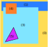

Nicolas Silva - FOSDEM 2017
- DOM tree: the web page as seen by web developpers
- Frame tree: positioned elements (layout)
- Display list: high-level drawing commands (invalidation)
- Layer tree: tree of rendered intermediate surfaces (painting)
-----
- Compositor layer tree: mirrored on the compositor process (compositing)
- Retained mode rendering
- Written in rust
- OpenGL (for now)
- Designed to work like a game rendering engine
- No painting/compositing distinction (renders everything to the window directly)
How do we make things reasonably fast on a GPU?
- Design around primitives that the GPU can work with
- avoid state switches, batch, batch, batch!
- Avoid data transfer to and from the CPU
- Avoid overdraw
- Solid color
- Image
- YUV Image
- Text
- Border
- Blur
- Rounded rectangle shadow
- Composite (multiply, hard-light, etc.)
- Blend (sepia, invert, etc.)
- Gradients (linear, radial, etc.)
- Clipped versions of each primitive.
- Vertex data
- Simple unit quad drawn instancing
- No primitive data
- Vertex shader
- Fetch primitive data using the instance ID
- Apply rectangular clip
- Apply transforms
- Fragment shader
- Compute the color (different for each primitive)

- Very important!
- Use the Z-buffer with the paint order to generate the z coordinates
- Front-to-back opaque pass (Z-Read/Write)
- Back-to-front transparent pass (Z-Read)
- Very important as well
- texture cache for image data and glyphs
- Opaque pass (order independent)
- Easy, since we can reorder draw calls
- Transparent pass (order matters for overlapping primitives)
- Tiling (quickly find non-overlapping primitives)
- Maybe something else...
Opaque pass (front to back)
Opaque pass (front to back)
Opaque pass (front to back)
Opaque pass (front to back)
Opaque pass (front to back)
Transparent pass (back to front)

Transparent pass (back to front)
Transparent pass (back to front)
- The "backend" thread does most of the CPU work (managing resources, generating batches, etc.)
- The render thread only submits commands to the GPU
- WebRender overview - FOSDEM 2017
- Nicolas Silva (:nical) - @nicalsilva
Links: